수산물품질관리사-1차 (2019-07-20 기출문제)
1과목: 수산물품질관리 관련법령
1. 농수산물 품절관리법상 ‘이력추적관리’ 용어의 정의이다. ( )에 들어갈 내용을 순서대로 옳게 나열한 것은?
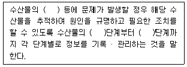
- 경제성, 생산, 판매
- 경제성, 유통, 소비
- 안전성, 생산, 판매
- 안전성, 생산, 소비
(정답률: 알수없음)

2. 농수산물 품질관리법상 생산단계 수산물 안전기준을 위반한 경우에 해당 수산물을 생산한 자에게 (A)처분할 수 었는 사항과 그 (B)권한을 가칙 자로 옳은 것을 모두 고른 것은?
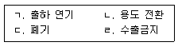
- A: ㄱ, ㄴ, B: 해양수산부장관
- A: ㄷ, ㄹ, B: 국립수산물품질관리원장
- A: ㄱ, ㄴ, ㄷ, B: 시 · 도지사
- A: ㄴ, ㄷ, ㄹ, B: 국립수산과학원장
(정답률: 알수없음)
3. 농수산물 품질관리법령상 지리적표시품에 관한 내용이다. ( )에 들어갈 내용을 순서 대로 옳게 나열한 것은?
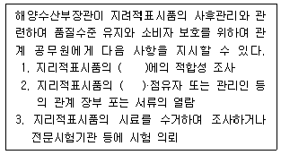
- 허가기준, 판매자
- 등록기준, 소유자
- 허가기준, 생산자
- 등록기준, 수입자
(정답률: 알수없음)
4. 농수산물 품질관리법상 수산물 및 수산가공품에 유해물질이 섞여 들여오는지 둥에 대하여 해양수산부장관의 검사를 받아야 하는 것으로 옳지 않은 것은?
- 수출 상대국에서 검사 항목의 전부 생략을 요청하는 경우의 수산물
- 외국과의 협약에 따라 검사가 필요한 경우로서 해양수산부장관이 정하여 고시하는 수산물
- 수출 상대국의 요청에 따라 검사가 필요한 경우로서 해양수산부장관이 정하여 고시하는 수산가공품
- 정부에서 수매 · 비축하는 수산물
(정답률: 알수없음)
5. 농수산물 품질관리법령상 수산물의 생산·가공시절의 등록을 하려는 자가 생산·가공시절 등록신청서를 제출하여야 하는 기관의 장은?
- 해양수산부장관
- 국립수산물품질관리원장
- 국립수산과학원장
- 지방자치단체의 장
(정답률: 알수없음)
6. 농수산물 품질관리법상 검사나 재검사를 받은 수산물 또는 수산물가공품의 검사판정 취소에 관한 설명으로 옳지 않은 것은?
- 검사증명서의 식별이 곤란할 정도로 훼손되었거나 분설된 경우 취소할 수 있다.
- 재검사 결과의 표시 또는 검사증명서를 위조한 사실이 확인된 경우 취소할 수 있다
- 검사를 받은 수산물의 포장이나 내용물을 바꾼 사실이 확인된 경우 취소할 수 있다
- 거짓이나 부정한 방법으로 검사를 받은 사설이 확인된 경우 취소할 수 있다.
(정답률: 90%)
7. 농수산물 품질관리법령상 품질인증 유효가간 연장에 관한 내용이다. ( )에 내용을 순서대로 옳게 나열한 것은?
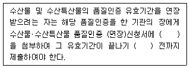
- 품질인증 지정서 원본, 1개월
- 품질인증서 원본, 1개월
- 품질인증 지정서 사본, 2개월
- 품질인증서 사본, 2개월
(정답률: 알수없음)
8. 농수산물 품질관리볍상 유전자변형수산물의 표시를 거짓으로 하거나 이를 혼동하게 할 우려가 있는 표시를 한 유전자변형수산물 표시의무자에 대한 벌칙기준은?
- 1년 이하의 징역 또는 1천만원 이하의 벌금
- 3년 이하의 징역 또는 3천만원 이하의 별금, 징역과 벌금 병과 가능
- 5년 이하의 징역 또는 5천만원 이하의 벌금, 징역과 벌금 병과 가능
- 7년 이하의 징역 또는 1억원 이하의 별금, 징역과 벌금 병과 가능
(정답률: 알수없음)
9. 농수산물 품질관리법령상 수산물품질관리사의 업무로 옳지 않은 것은?
- 무항생제수산물 생산 지도 및 인증
- 포장수산물의 표시사항 준수에 관한 지도
- 수산물의 션별 · 저장 및 포장시설 등의 운용 · 관리
- 수산물의 생산 및 수확 후의 품질관리기술 지도
(정답률: 90%)
10. 농수산물 품질관리볍상 지정해역의 보존 · 관리를 위한 지정해역 위생관랴대책의 수렵 · 시행권자는?
- 해양수산부장관
- 국립수산과학원장
- 식품의약품안전처장
- 국립수산물품질관리원장
(정답률: 알수없음)
11. 농수산물 유통 몇 가격안정에 관한 법률상 민영도매시장에 관한 설명으로 옳지 않은 것은?
- 시 · 도지사는 민영도매시장 개설자가 승인 없이 민영도매시장의 업무규정을 변경한 경우에는 개설허가를 취소할 수 있다.
- 민영도매시장의 개설자는 중도매인, 매매참가인, 산지유통인 및 경매사를 두어 직접 운영하여야 하며 이외의 자를 두어 운영하게 할 수 없다.
- 민영도매시장의 중도매인은 민영도매시장의 개설자가 지정한다.
- 민영도매시장의 경매사는 민영도매시장의 개설자가 임면한다.
(정답률: 알수없음)
12. 농수산물 유통 및 가격안정에 관한 법령상 ‘생산자 관련 단체’에 해당하는 것은?
- 영어조합법인
- 도매시장법인
- 산지유통인
- 시장도매인
(정답률: 알수없음)
13. 농수산물 유통 및 가격안정에 관한 법률상 ‘유통조설명령’에 관한 A수산물품질관리사의 판단은?
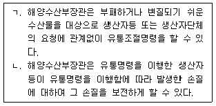
- ㄱ: 옳음, ㄴ: 옳음
- ㄱ: 틀림, ㄴ: 옳음
- ㄱ: 옳음, ㄴ: 틀림
- ㄱ: 틀림, ㄴ: 틀림
(정답률: 알수없음)
14. 농수산물 유통 및 가격안정에 관한 법률상 과태료 부과 대상자는?
- 도매시장법인의 지정 유효기간이 지난 후 도매시장법인의 업무를 한 자
- 정당한 사유 없이 집단적으로 경매 또는 입찰에 불참한 자
- 도매시장의 출입제한 등의 조치를 거부하거나 방해한 자
- 표준하역비의 부담을 이행하지 아니한 자
(정답률: 60%)
15. 농수산물 유통 및 가격안정에 관한 법률상 다음 ( )에 들어갈 내용은?
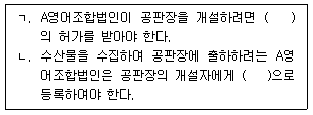
- ㄱ: 시 · 도지사, ㄴ: 시장도매인
- ㄱ: 수협중앙회장, ㄴ: 도매시장법인
- ㄱ: 시 · 도지사, ㄴ: 산지유통인
- ㄱ: 수협중앙회장, ㄴ: 중도매인
(정답률: 알수없음)
16. 농수산물의 원산지 표시에 관한 볍령상 원산지 표시를 하여야 할 자가 아닌 것은?
- 휴게음식점영업소 설치 · 운영자
- 위탁급식영업소 설치 · 운영자
- 수산물가공단지 설치 · 운영자
- 일반음식점영업소 설치 · 운영자
(정답률: 알수없음)
17. 농수산물의 원산지 표시에 관한 법률상의 설명으로 밑줄 친 부분이 옳지 않은 것은 몇 개인가?
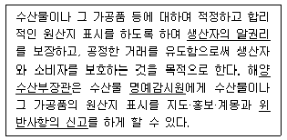
- 1개
- 2개
- 3개
- 4개
(정답률: 알수없음)
18. 농수산물의 원산지 표시에 관한 법률을 위반하여 7년 이하의 징역이나 1억원 이하의 벌금에 해당하는 것을 모두 고른 것은? (단, 병과는 고려하지 않음)
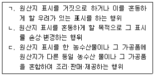
- ㄱ, ㄴ
- ㄱ, ㄷ
- ㄴ, ㄷ
- ㄱ, ㄴ, ㄷ
(정답률: 67%)
19. 농수산물의 원산지 표시에 관한 법령상 부과될 과태료는? (단, B업소는 1차 단속에 적발 및 감경사유를 고려하지 않음)
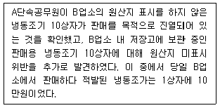
- 100만원
- 200만원
- 500만원
- 1,000만원
(정답률: 알수없음)
20. 농수산물의 원산지 표시에 관한 법령상 식품접객업을 운영하는 자가 농수산물이나, 그 가공품을 조리하여 판매·제공하는 경우로써 원산지를 표시하여야 하는 대상품목이 아닌 것은?
- 참돔
- 넙치
- 황태
- 고등어
(정답률: 73%)
21. 농수산물의 원산지 표시에 관한 법령상 국내에서 K어묵을 제조하여 대형할인마트에서 판매하고자 한다. 이 경우 포장지에 표시하여야 할 원산지 표시는?
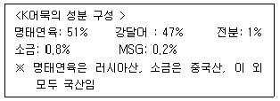
- 어묵(명태연육: 러시아산)
- 어묵(강달어 : 국산)
- 어묵(명태연육: 러시아산, 소금: 중국산, MSG: 국산)
- 어묵(명태연육: 러시아산, 강달어: 국산)
(정답률: 알수없음)
22. 친환경농어업 육성 및 유기식품 등의 관리·지원에 관한 법률상 무항생제수산물등의 인증을 할 수 있는 권한을 가진 자는?
- 지방자치단체의 장
- 국립수산물품질관리원장
- 국립수산과학원장
- 해양수산부장관
(정답률: 알수없음)
23. 친환경농어업 육성 및 유기식품 등의 관리·지원에 관한 법령상 유기식품등의 인증기관의 지정 갱신은 유효기간 만료 몇 개월 전까지 선청서를 제출하여야 하는가?
- 1개월
- 2개월
- 3개월
- 4개월
(정답률: 30%)
24. 수산물 유통의 관리 및 지원에 관한 법률상 수산물의 처리물량을 규모화하고 상품의 부가가치를 높일 목적으로 수산물을 수집·가공하여 판매하기 위한 수산물 유통 시설은?
- 수산물직거래촉진센터
- 수산물소비지분산물류센터
- 수산물산지거점유통센터
- 수산물유통가공협회
(정답률: 알수없음)
25. 수산물 유통의 관리 및 지원에 관한 법률상 수산물유통발전 기본계획에 포함되지 않는 것은?
- 수산물 수급관리에 관한 사항
- 수산물 품질·검역 관리에 관한 사항
- 수산물 유통구조 개선 및 발전기반 조성에 관한 사항
- 수산물유통산업 관련 전문인력의 양성 및 정보화에 관한 사항
(정답률: 알수없음)
2과목: 수산물유통론
26. 정부의 수산물 유통정책의 주요 목적으로 옳지 않은 것은?
- 유통경로 효율화 촉진
- 적절한 수급조절
- 식품 안전성 확보
- 유통업체 이익 확대
(정답률: 알수없음)
27. 수산물 유통활동에 관한 설명으로 옳은 것은?
- 상적 유통활동과 물적 유통활동의 두 가지 유형 이 있다.
- 물적 유통활동은 상거래활동, 유통금융활동 등으로 세분화할 수 있다.
- 상적 유통활동은 운송활동, 보관활동 등으로 세분화할 수 있다.
- 소유권 이전에 관한 활동은 물적 유통활동이다.
(정답률: 알수없음)
28. 수산물 유통기구에 관한 설명으로 옳지 않은 것은?
- 생산자와 소비자 사이에 유통기구가 개입하는 간접적 유통이 일반적이다.
- 간접적 유통기구는 수집, 분산, 수집 · 분산연결 기구의 세 가지 유형이 있다.
- 산지 위판장이나 산지 수집도매상은 분산기구이다.
- 노량진수산물도매시장은 수집 · 분산연결 기구이다.
(정답률: 알수없음)
29. 수산물 유통의 특성으로 옳은 것을 모두 고른 것은?
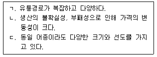
- ㄱ
- ㄱ, ㄴ
- ㄴ, ㄷ
- ㄱ, ㄴ, ㄷ
(정답률: 알수없음)
30. 수산물 유통구조의 특정으로 옳지 않은 것은?
- 최종 소비지 시장이 집중되어 있다
- 유통업체는 대부분 규모가 작고 영세하다.
- 유통이 다단계로 이루어져 있다.
- 동일 어종인 경우에도 연근해 · 원양 · 수입 수산물에 따라 유통방법이 다르다.
(정답률: 알수없음)
31. 수산물 도매시장의 시장도매인 재도에 관한 설명으로 옳지 않은 것은?
- 도매시장의 개설자로부터 지정을 받고 수산물을 매수 또는 위탁받아 도매하거나 매매를 중개하는 영업을 하는 법인을 말한다.
- 시장도매인은 해당 도매시장의 도매시장법인 · 중도매인에게 수산물을 판매하지 못한다.
- 현재 부산공동어시장, 노량진수산물도매시장, 대구북부수산물도매시장 등에서 운영 중이다.
- 도매운영주체에 따라 도매시장법인만 두는 시장, 시장도매인만 두는 시장, 도매시장법인과 시장도매인을 함께 두는 시장으로 구분할 수 있다.
(정답률: 알수없음)
32. 우라나라 수산물 소비의 동향 및 특정으로 옳지 않은 것은?
- 대중 선호어종은 고등어, 갈치, 오징어 등이다.
- 소득이 높아짐에 따라 질보다는 양을 중시하게 된다.
- 수산물 안전성 문제가 소비자의 관심사로 부각되고 있다.
- 1인가구의 증가 등으로 가정간편식(HMR) 이 많이 출시되고 있다.
(정답률: 알수없음)
33. 유통업자가 안정적으로 수산물을 확보하기 위해 활용하고 았는 거래관행은?
- 전도금제
- 위탁판매제
- 외상거래제
- 경매 · 입찰제
(정답률: 알수없음)
34. 수산물 전자상거래의 장점으로 옳지 않은 것은?
- 운영비가 절감된다.
- 유통경로가 짧아진다.
- 시간·공간적으로 제약이 있다.
- 소비자와 생산자 간의 양방향 소통이 가능하다.
(정답률: 90%)
35. 수산물 공동판매의 장점으로 옳지 않은 것은?
- 출하량 조절이 용이하다.
- 운송비를 절감할 수 있다.
- 가격 교섭력을 높일 수 있다.
- 유통업자 간의 판매시기와 장소를 조정하는 방법이다.
(정답률: 알수없음)
36. 수산물 가격이 폭등하는 경우 정부의 정책수단으로 옳온 것을 모두 고른 것은?
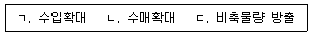
- ㄱ
- ㄱ, ㄷ
- ㄴ, ㄷ
- ㄱ, ㄴ, ㄷ
(정답률: 알수없음)
37. 20kg 고등어 한 상자의 각 유통경로별 가격을 나타낸 것이다. 이때 소매점의 유통마진율(%)은?
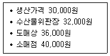
- 10
- 15
- 20
- 25
(정답률: 알수없음)
38. 수산물 소비지 도매시장의 가능으로 옳지 않은 것은?
- 유통분산 기능
- 양륙진열 기능
- 가격형성 기능
- 수집집하 기능
(정답률: 알수없음)
39. 수산물 도매상에 관한 설명으로 옳은 것은?
- 최종 소비자의 기호 변화를 즉시 반영한다.
- 주로 최종 소바자에게 수산물을 판매한다.
- 수집시장과 분산시장을 연결하는 역할을 한다.
- 전통시장 등의 오프라인과 소설커머스와 같은 온라인도 해당된다.
(정답률: 알수없음)
40. 유용한 통계정보를 얻기 위한 바람직한 수산물의 유통경로는?
- 생산자 → 산지 위판장 → 소바자
- 생산자 → 객주 → 소비자
- 생산자 → 수집상 → 도매인 → 소비자
- 생산자 → 횟집 → 소비자
(정답률: 알수없음)
41. 활꽃게의 유통에 관한 설명으로 옳지 않은 것은?
- 산지유통과 소비지유통으로 구분된다.
- 일반적으로 계통출하보다 비계통출하의 비중이 높다.
- 활광어와 비교하여 산소발생기 등 유통기술이 적게 요구된다.
- 근해자망, 연안자망, 연안개량안강망, 연안통발 둥에 의해 공급된다.
(정답률: 알수없음)
42. 갈치 선어의 유통에 관한 설명으로 옳지 않은 것은?
- 유통에는 빙장이 필요하다.
- 대부분 산지 위판장을 통해 출하된다.
- 선도 유지를 위해 신속한 유통이 필요하다.
- 주로 어가경영인 대형기선저인망어업에 의해 공급된다.
(정답률: 알수없음)
43. 냉동오징어의 유통특성에 관한 설명으로 옳은 것을 모두 고른 것은?
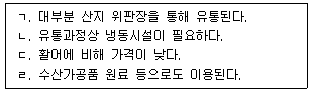
- ㄱ, ㄴ
- ㄴ, ㄷ
- ㄱ, ㄴ, ㄹ
- ㄴ, ㄷ,ㄹ
(정답률: 알수없음)
44. 수산가공품의 유통이 가지는 특성이 아닌 것은?
- 일반식품의 유통경로와 유사하다.
- 소비자의 다양한 기호를 만족시킬 수 있다.
- 수송은 용이하나 공급조절에는 한계를 지닌다.
- 냉동품, 자건품, 한천, 수산피혁 등 다양하다.
(정답률: 알수없음)
45. 마른멸치의 유통과정에 관한 설명으로 옳지 않은 것은?
- 자숙가공을 통해 유통된다.
- 주로 기선권현망어업에 의해 공급된다.
- 대부분 산지 수집상을 통해 소비자에게 유통된다.
- 생산자로부터 소비자에게 직접 유통되기도 한다.
(정답률: 70%)
46. 수산물 수출입 과정에서 분쟁이 발생할 경우 심의하는 국제기구는?
- FTA
- FAO
- WTO
- WHO
(정답률: 알수없음)
47. 수산물 소비자의 정보를 수집하여 취향조사, 만족도조사, 분석, 관리, 적절한 대응 등에 활용하는 방법은?
- POS(Point Of Sales)
- CS(Consumer Satisfaction)
- SCM(Supply Chain Management)
- CRM(Customer Relationship Management)
(정답률: 알수없음)
48. 수산물 유통체계의 효율화와 수산물유통산업의 경쟁력 강화에 관하여 규정하고 있는 법률은?
- 수산업법
- 수산자원관리법
- 공유수면관리 및 매립에 관한 법률
- 수산물 유통의 관리 및 지원에 관한 법률
(정답률: 알수없음)
49. 유통과정에서 선어와 비교하여 냉동수산물이 갖는 장점으로 모두 고른 것은?
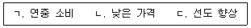
- ㄱ
- ㄱ, ㄴ
- ㄴ, ㄷ
- ㄱ, ㄴ, ㄷ
(정답률: 91%)
50. 수산물 선물시장에 관한 설명으로 옳지 않은 것은?
- 위험관리기능을 제공한다.
- 계약이행보증을 위한 증거금제도가 있다.
- 마래의 현물가격에 대한 예시기능을 수행한다.
- 현물 및 선물 가격 간의 차이를 스왑(swap) 이라고 한다.
(정답률: 알수없음)
3과목: 수확후 품질관리론
51. 휘발성염기질소(VBN) 측정법으로 선도를 판정할 수 없는 수산물은?
- 연어
- 고등어
- 상어
- 오징어
(정답률: 알수없음)
52. 어류의 근육 조직에서 적색육과 백색육을 비교하는 설명으로 옳은 것은?
- 적색육은 백색육에 비하여 지방 함량이 적다.
- 백색육은 적색육에 비하여 단백질 함량이 많다.
- 백색육은 적색육에 비하여 각종 효소의 활성이 강하다.
- 적색육은 백색육에 비하여 선도 저하가 느리다.
(정답률: 알수없음)
53. 수산 식품업체 B사는 -20℃에서 실용 저장기간(PSL)이 200일인 신선한 고등어를 구입하여 동일 온도의 냉동고에서 150일간 저장하였다. 이 냉동 고등어의 실용 저장기간과 품질 저하율에 관한 설명으로 옳은 것은?
- 실용 저장기간이 25% 남아 있다.
- 품질 저하율이 25% 이다.
- 실용 저장기간이 75% 남아 있다.
- 품질 저하율이 50% 이다.
(정답률: 알수없음)
54. 우리나라 전통 젓갈과 저염 젓갈의 차이점에 관한 설명으로 옳지 않은 것은?
- 전통 젓갈의 제조원리는 식염의 방부작용과 자가소화 효소의 작용이다.
- 저염 젓갈은 첨가물을 사용하여 보존성을 부여한 기호성 위주의 제품이다.
- 전통 젓갈은 20%이상의 식염을 첨가하여 숙성 발효시킨다.
- 저염 젓갈은 15%의 식염을 첨가하여 숙성 발효시킨다.
(정답률: 알수없음)
55. 동결 저장 중에 발생하는 수산물의 변질현상에 해당하지 않는 것은?
- 갈변(BrownÍng)
- 허니콤(Honey comb)
- 스펀지화(Sponge)
- 스트루바이트(Struvite)
(정답률: 알수없음)
56. 마른멸치를 가공할 때 자숙의 기능에 해당하지 않는 것은?
- 부착세균을 사멸시킨다.
- 단백질을 응고시켜 건조를 쉽게 한다.
- 엑스성분의 유출을 방지한다.
- 자가소화 효소를 불활성화시킨다.
(정답률: 알수없음)
57. 수산물의 염장볍 중 개량물간법에 관한 설명으로 옳온 것은?
- 소금의 침투가 불균일하다.
- 제품의 외관과 수율이 양호하다.
- 지방 산화가 일어나 변색될 우려가 있다.
- 염장 초기에 부패하기 쉽다.
(정답률: 64%)
58. 통조림의 품질 검사 중 일반 검사 항목으로 옳은 것을 모두 고른 것은?
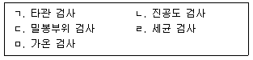
- ㄱ, ㄹ
- ㄱ, ㄴ, ㅁ
- ㄴ, ㄷ, ㄹ
- ㄱ, ㄴ, ㄷ, ㄹ
(정답률: 알수없음)
59. 가능성 수산 가공품에는 고시형과 개별 인정형이 었다. 다음 중 개별 인정형에 해당되는 것은?
- 리프리놀
- 글루코사민
- 클로렐라
- 키토산
(정답률: 알수없음)
60. 오징어, 새우 등 연체동물과 갑각류에 함유되어 단맛을 내는 염기성 물질은?
- 요소
- 트리메틸아민옥시드
- 베타인
- 뉴클레오티드
(정답률: 알수없음)
61. 기체 조절을 이용하여 수산 식품의 저장 기간을 연장하는 방법은?
- 산화방지제 첨가
- 방사선 조사
- 무균포장
- 탈산소제 첨가
(정답률: 알수없음)
62. 수산 식품업체 B사는 상온에서 유통 가능한 신제품을 개발하고 었다. 가열 살균온도 110℃에서 클로스트라듐 보툴리눔 (Clostridium botulinum) 포자의 사멸에 필요한 시간은 70분이었다. 살균온도를 120℃로 올릴 정우 사멸에 필요한 예상 시간은?
- 7분
- 14분
- 35분
- 60분
(정답률: 알수없음)
63. 식품 포장용 유리 용기의 특성에 해당하지 않는 것은?
- 산, 알칼리, 기름 등에 불안정하여 녹거나 침식이 발생할 수 있다.
- 빛이 투과되어 내용물이 변질되기 쉽다.
- 충격 및 열에 약하다.
- 포장 및 수송 경비가 많이 든다.
(정답률: 알수없음)
64. 연제품의 탄력 보강제 또는 증량제로 사용되지 않는 것은?
- 달걀 흰자
- 글루탐산나트륨
- 타피오카 녹말
- 옥수수 전분
(정답률: 알수없음)
65. 동결 연육을 이용한 연제품의 가공공정을 옳게 나열한 것은?
- 고기갈이 → 성형 → 가열 → 냉각 → 포장
- 고기갈이 → 가열 → 냉각 → 성형 → 포장
- 고기갈이 → 가열 → 탈기 → 포장 → 냉각
- 고기갈이 → 성형 → 가열 → 탈기 → 포장
(정답률: 80%)
66. 카라기난의 성질에 관한 설명으로 옳은 것을 모두 고른 것은?
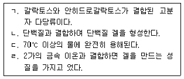
- ㄱ, ㄴ
- ㄷ, ㄹ
- ㄱ, ㄴ, ㄷ
- ㄴ, ㄷ, ㄹ
(정답률: 알수없음)
67. 수산물 원료의 전처리를 위해 사용되는 기계가 아난 것은?
- 어체 선별기
- 필레 가공기
- 탈피기
- 사이런트 커터
(정답률: 알수없음)
68. 동해안 특산물인 황태의 가공법으로 옳은 것은?
- 동건법
- 자건법
- 염건법
- 소건법
(정답률: 알수없음)
69. HACCP 7원칙 중 식품의 위해를 사전에 방지하고, 확인된 위해요소를 제거할 수 있는 단계는?
- 위해요소 분석
- 중점관리점 결정
- 개선조치 방법 수립
- 검정절차 및 방법 수립
(정답률: 70%)
70. 세균성 식중독 중에서 독소형인 것은?
- 장염비브리오균
- 예르시니아균
- 살모넬라균
- 보툴리누스균
(정답률: 70%)
71. 식품공전 상 자연독에 의한 식중독의 기준치가 설정되어 있지 않은 것은?
- 복어독 (Tetrodotoxin)
- 설사성 패류독소(DSP)
- 신경성 패류독소 (NSP)
- 마비성 패류독소 (PSP)
(정답률: 알수없음)
72. 50대 B씨는 복어전문점에서 까치복을 먹고 난 후 입술과 손끝이 약간 저리고 두통, 복통이 발생하여 복어독에 대한 의섬을 갖게 되었다. 복어독의 특성에 관한 설명으로 옳지 않은 것은?
- 독력은 청산나트륨(NaCN) 보다 훨씬 치명적이다.
- 난소나 간에 많고 근육에는 없거나 미량 검출된다.
- 근육마비 증상 등을 일으키며 심하면 사망한다.
- 산에 불안정 하며 알칼리에 안정하다.
(정답률: 알수없음)
73. 장염비브라오균에 관한 설명으로 옳지 않은 것은?
- 호염성 해양세균이며 그람 음성균이다.
- 우리나라 겨울철에 채취한 패류에서 많이 검출된다.
- 어패류를 취급하는 조리 기구에 의해 교차오염이 가능하다.
- 열에 약하므로 섭취 전 가열로 사멸이 가능하다.
(정답률: 82%)
74. 수산물의 가공공정 및 용수 중 위생 상태를 확인하는 오염지표 세균은?
- 살모넬라균
- 대장균
- 리스테리아균
- 황색포도상구균
(정답률: 93%)
75. HACCP 적용을 위한 식품제조가공업소의 주요 선행요건에 해당하지 않는 것은?
- 위생관리
- 용수관리
- 유통관리
- 회수 프로그램관리
(정답률: 알수없음)
4과목: 수산일반
76. 다음 중 수산업 · 어촌발전기본법에서 정의하는 수산업을 모두 고른 것은?
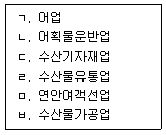
- ㄱ, ㄹ
- ㄴ, ㄷ, ㅁ
- ㄱ, ㄴ, ㄹ, ㅂ,
- ㄱ, ㄷ, ㅁ, ㅂ
(정답률: 알수없음)
77. 다음 어촌 · 어항법에서 정의하는 어항은?
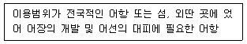
- 지방어항
- 어촌정주어항
- 국가어항
- 마을공동어항
(정답률: 알수없음)
78. 국내 수산물 중 최근 2년간 (2017 - 2018) 수출액이 가장 많은 것은?
- 김
- 굴
- 오징어
- 갈치
(정답률: 알수없음)
79. 수산업법에서 연안어업에 관한 설명으로 옳은 것은?
- 면허어업이며, 유효기간은 10년이다.
- 허가어업이며, 유효기간은 5년이다.
- 신고어업이며, 유효기간은 5년이다.
- 등록어업이며, 유효기간은 10년이다.
(정답률: 알수없음)
80. 다음에서 A와 B에 들어갈 내용으로 옳게 연결된 것은?
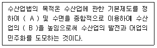
- A: 수산자원, B: 생산성
- A: 어업자원, B: 경제성
- A: 수산자원, B: 효율성
- A: 어업자원, B: 생산성
(정답률: 알수없음)
81. 다음 ( )에 들어갈 내용으로 옳은 것은?
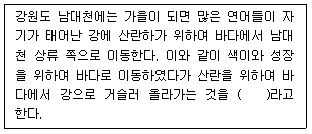
- 강하성 회유
- 소하성 회유
- 색이 회유
- 월동 회유
(정답률: 80%)
82. 어류 계군의 식별방법 중 생태학적 방법으로 사용할 수 있는 것을 모두 고른 것은?
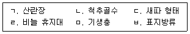
- ㄱ, ㄹ
- ㄱ, ㅁ
- ㄴ, ㄷ
- ㅁ, ㅂ
(정답률: 알수없음)
83. 어류 발달 과정을 순서대로 옳게 나열한 것은?
- 난기 → 자어기 → 치어기 → 미성어기 → 성어기
- 난기 → 치어기 → 자어기 → 미성어기 → 성어기
- 난기 → 자어기 → 마성어기 → 치어기 → 성어기
- 난기 → 치어기 → 미성어기 → 자어기 → 성어기
(정답률: 알수없음)
84. 울산광역시 소재 고래연구센터에서는 우리나라에 서식하고 있는 해양포유동물의 생물학적 · 생태학적 조사 등에 관한 업무를 수행하고 있다. 동 센터에서 고래류의 자원량을 추정하기 위하여 사용하는 방법으로 옳은 것은?
- 트롤조사법
- 목시조사법
- 난생산량법
- 자망조사법
(정답률: 84%)
85. 어업자원의 남획 징후로 옳지 않은 것은?
- 어획량이 감소한다.
- 단위노력당어획량(CPUE)이 감소한다.
- 어획물 중에서 미성어 비율이 감소한다.
- 어획물의 각 연령군 평균체장이 증가한다.
(정답률: 알수없음)
86. 조류의 흐름이 빠른 곳에서 조업하기에 적합한 강제함정 어구를 모두 고른 것은?
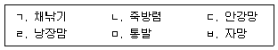
- ㄱ, ㄴ, ㄷ
- ㄴ, ㄷ, ㄹ
- ㄷ, ㄹ, ㅂ
- ㄹ, ㅁ, ㅂ
(정답률: 73%)
87. 다음에서 설명하는 어업의 종류로 옳은 것은?
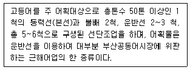
- 대형트롤어업
- 대형선망어업
- 근해통발어업
- 근해자망어업
(정답률: 알수없음)
88. 우리나라 해역별 대표 어종과 어업 종류가 올바르게 연결된 것은?
- 동해안 - 대게 - 근해안강망
- 서해안 - 조기 - 근해채낚기
- 서해안 - 도루묵 - 근해자망
- 남해안 - 멸치 - 기선권현망
(정답률: 알수없음)
89. 대상어족을 미꺼로 유인하여 잡는 함정어구는?
- 통발
- 자망
- 형망
- 문어단지
(정답률: 알수없음)
90. 해삼의 유생 발달 과정에 속하지 않는 것은?
- 아우리쿨라리아 (Auricularia)
- 드포울(Tadpole)
- 돌리올라리아(Doliolaria)
- 포배기 (Blastula)
(정답률: 90%)
91. 봄철 담수어류의 양식장에서 물곰팡이병이 많이 발생하는 수온 범위는?
- 0 ~ 5℃
- 10 ~ 15℃
- 20 ~ 25℃
- 30 ~ 35℃
(정답률: 80%)
92. 해상가두라 양식장의 환경 특성 중에서 물리적 요인을 모두 고른 것은?
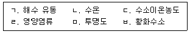
- ㄱ, ㄴ, ㄹ
- ㄱ, ㄴ, ㅁ
- ㄴ, ㄷ, ㅂ
- ㄷ, ㄹ, ㅂ
(정답률: 73%)
93. 대부분의 해조류는 무성세대인 포자체와 유성세대인 배우체가 세대교번을 한다. 다음 중 세대교번을 하지 않는 품종은?
- 김
- 다시마
- 미역
- 청각
(정답률: 알수없음)
94. 양식 어류의 인공종자(종묘) 생산 시 동물성 먹이생물로 옳지 않은 것은?
- 물벼룩(Daphnia)
- 아르테미아(Aπermia)
- 클로렐라(Chlorella)
- 로티퍼(Rotifer)
(정답률: 알수없음)
95. 참돔 50kg을 해상가두리에 업식한 후, 500kg의 사료를 공급하여 참돔 총 중량 300kg을 수확하였을 경우 사료계수는?
- 0.5
- 1.0
- 1.5
- 2.0
(정답률: 알수없음)
96. 강 하구에서 포확한 치어를 이용하여 양식하는 어종으로 옳은 것은?
- 잉어
- 뱀장어
- 미꾸라지
- 무지개송어
(정답률: 알수없음)
97. 양식 패류 중 굴의 양성 방법으로 적합하지 않은 것은?
- 수하식
- 나뭇가지식
- 귀매달기식
- 바닥식(투석식)
(정답률: 알수없음)
98. 2018년 기준, 우리나라 총허용어획량 (TAC) 이 적용되는 어업종류와 어종을 바르게 연결한 것은?
- 근해안강망 - 오징어
- 근해자망 - 갈치
- 기선권현망 - 꽃게
- 근해통발 - 붉은대게
(정답률: 알수없음)
99. 고래류의 자원관리를 하는 국제수산관라가구의 명칭은?
- 북서대서양수산위원회(NAFO)
- 중서부태평양수산위원회 (WCPFC)
- 남극해양생물자원보존위원회(CCAMLR)
- 국제포경위원회 (IWC)
(정답률: 알수없음)
100. 다음에서 설명하는 것은?
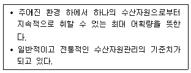
- MSY
- MEY
- ABC
- TAC
(정답률: 알수없음)